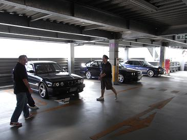
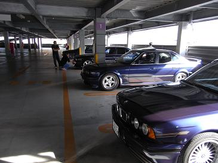
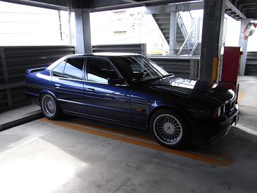
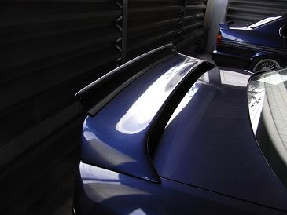
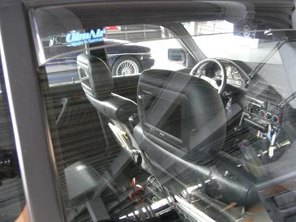
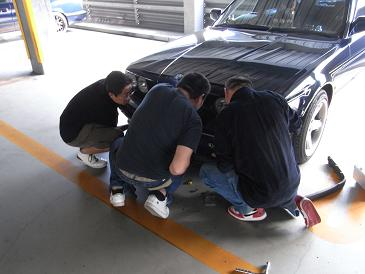
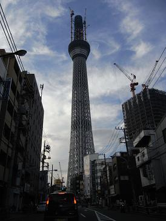
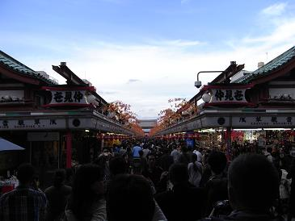

 オフミ会場は、千葉県市川市にあるスーパーオートバックスだ。 幹事のヒロさんに連絡して現場へ！ あ〜ぁ、本当に千葉まで来ちゃったよ！（笑
|
 濃紺系の４台が集まりました。 手前からB10 Biturbo(ばしひでさん）/S5 silhouette(ヒロさん)/525i（こぉ〜さん）/535i（Mゴロー）
|
 ホイールがノーマルに戻ったばしひで号 雰囲気ありますねぇ〜＾＾
|
  進化を続けるヒロ号！ 羽が2段式になってたり、、ヘッドレストにモニターがついていたり＾＾
|
 こぉ〜号を囲む皆さん。 OBCを取り付ける為に、外気温センサーのカプラーを探しているところ。 「カプラーないよ〜？」 「あるよ！」 「どこどこ〜？」 「ここ」 「え〜見えない〜」 「なんでだよ〜」 こんな感じのゆる〜いオフミでした（笑 まだまだ続きそうでしたが、、店内で友人を待たせていたので30分の滞在時間でした。。
|
  帰りに、建設途中の東京スカイツリーを通り過ぎて、、浅草見物をして帰りました。 突然の参加にもかかわらず、相手してくださった皆様ありがとうございました。
|